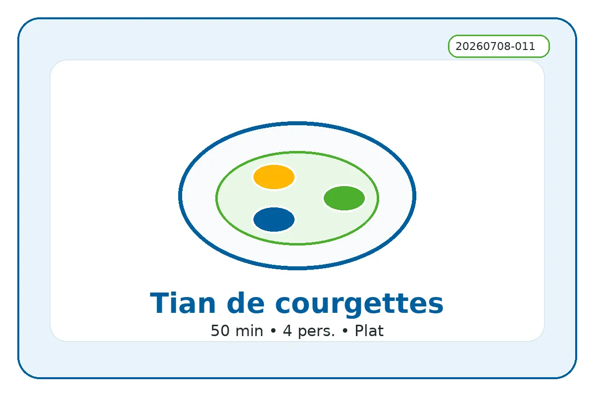

ID recette : 20260708-011
Tian de courgettes
Un tian de courgettes fondant et parfumé, à préparer avec des courgettes de saison, un peu de tomate et des herbes.
La réussite tient à une cuisson suffisamment longue pour concentrer les légumes sans les brûler. Des tranches fines et régulières donnent un plat plus fondant et plus joli.

🧭 Repères alimentaires
Repères indicatifs à vérifier selon les marques, les remplacements d’ingrédients et les produits réellement utilisés.
🔥 Cuisson indicative
Four : 180 à 200 °C pendant 40 à 60 min, jusqu’à obtenir des légumes fondants et légèrement confits.
Repère four : 180 à 200 °C — 40 à 60 min.
Ces valeurs sont indicatives : ajuster selon le four, l’épaisseur du plat et la coloration souhaitée.
⚖️ Adapter les quantités
Le calcul adapte les quantités proportionnellement. Les valeurs nutritionnelles restent calculées sur les quantités de base.
🧺 Ingrédients avec quantités
Principaux
- 800 g — courgettes
- 500 g — tomates
Secondaires
- 2 pièces — oignons
- 1 gousse — ail
- 2 c. à soupe — huile d’olive ou huile neutre
Optionnels
- 1 c. à soupe — herbes de Provence
- 80 g — fromage râpé
- 80 g — riz cru au fond du plat
👩🍳 Préparation détaillée
- Préchauffer le four à 180-200 °C. Laver les courgettes et les tomates, puis les couper en fines rondelles.
- Huiler légèrement un plat à gratin. Répartir l’oignon émincé ou l’ail au fond si disponible.
- Ranger les rondelles de courgette et de tomate en les alternant.
- Saler, poivrer, ajouter herbes de Provence ou basilic, puis arroser d’un filet d’huile.
- Cuire 40 à 60 minutes, jusqu’à ce que les légumes soient fondants et légèrement confits.
💡 Astuce anti-gaspi
Si les courgettes rendent beaucoup d’eau, prolonger la cuisson quelques minutes à découvert. Les restes sont très bons froids ou dans une omelette.
🔁 Variantes possibles
Ajouter riz au fond du plat, fromage râpé, chapelure, aubergine, pomme de terre ou un reste de sauce tomate. Pour un plat complet, ajouter pois chiches ou thon émietté.
🔎 Rechercher cette recette sur Google
🔗 Sources d’inspiration
Liens utilisés pour comparer les techniques, les variantes et les temps de préparation. La fiche reste reformulée et adaptée au projet.
📊 Valeurs nutritionnelles estimées
Estimation indicative. Les valeurs ci-dessous sont calculées à partir d’ingrédients génériques et des quantités de base. Elles ne remplacent pas les étiquettes des produits, ni un avis médical ou diététique. Voir l’explication complète.
Non officiel
| Valeur | Par portion | Pour 100 g |
|---|---|---|
| Énergie | 1235 kJ / 295.2 kcal | 289 kJ / 69.1 kcal |
| Protéines | 10.8 g | 2.5 g |
| Glucides | 31.2 g | 7.3 g |
| dont sucres | 10.5 g | 2.4 g |
| Lipides | 14.5 g | 3.4 g |
| dont acides gras saturés | 5.1 g | 1.2 g |
| Fibres | 5.2 g | 1.2 g |
| Sel | 0.4 g | 0.1 g |
Portion estimée : 428 g. Score simplifié : -6. Indicateur estimé non officiel. Il ne correspond pas à un calcul réglementaire ni à un Nutri-Score officiel.
⚠️ Allergènes et conservation
Allergènes : Lait
Conservation : À conserver 24 h au réfrigérateur dans une boîte fermée.
Réchauffage : À réchauffer doucement si nécessaire.
Vérifiez toujours les étiquettes des produits utilisés.
🔎 Filtres associés
Cliquez sur un bouton pour trouver les recettes associées au même champ.
Sous-catégorie : Tian
Moment du repas : Dejeuner Diner
Équipement : Four
Allergènes : Lait
Repères alimentaires : Sans porc Végétarien Vegan possible Sans gluten possible Sans lactose possible
📱 QR code
QR code vers la fiche en ligne.
https://recettesducoeur.github.io/recettes/20260708-011.html
Sur mobile/tablette, seul le téléchargement PDF est proposé. Sur PC, l’impression conserve les quantités sélectionnées.